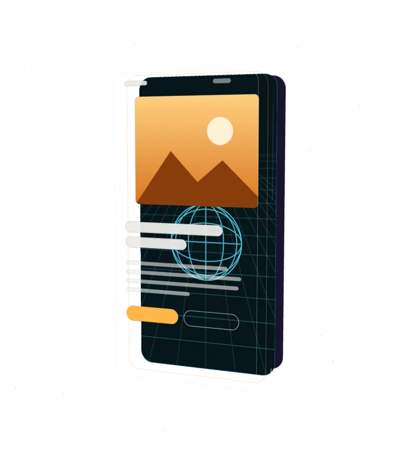
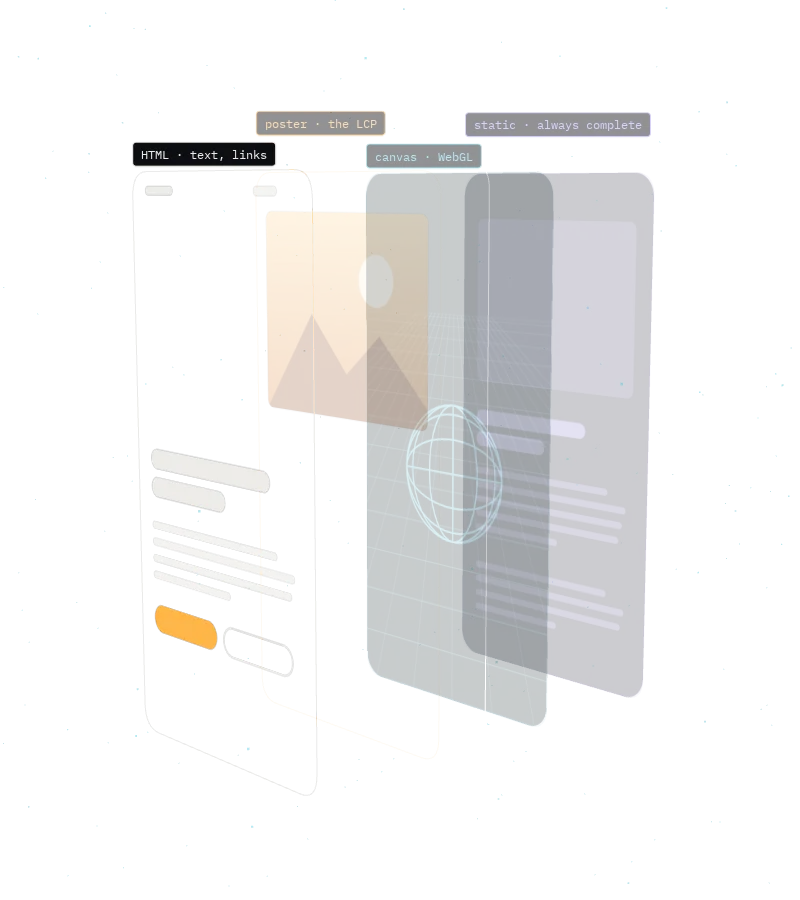
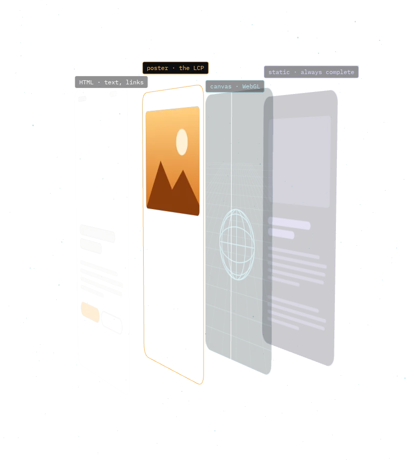
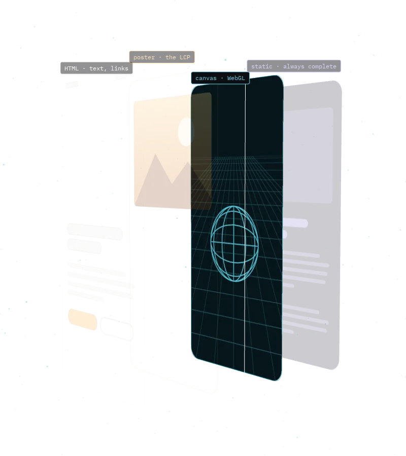
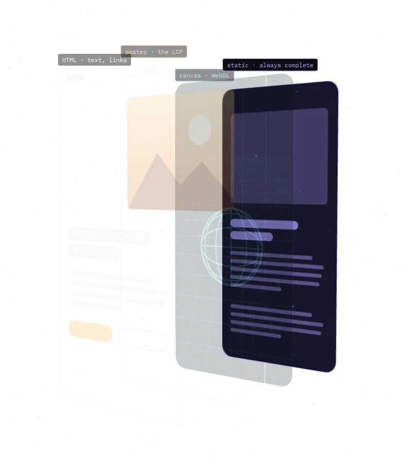
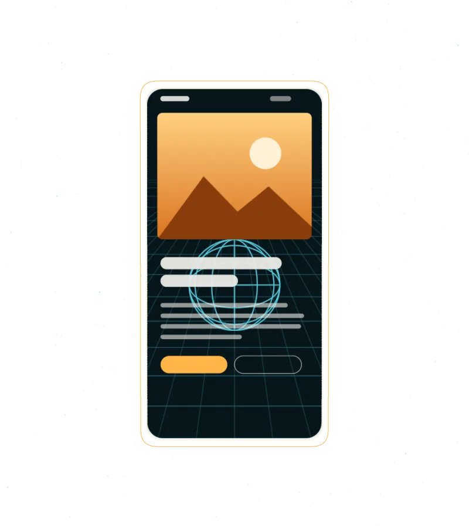

decision.md
When 3D earns its place, and what the mechanic must prove about the business.
An installable skill for Claude Code and AGENTS.md
Most 3D websites stutter on mid-range phones, ship tens of megabytes, and hand Google an empty canvas. This skill gets an AI agent to build the effect without paying that price, and to say no when 3D doesn't belong.
Step 0
The first thing the skill asks. If a photo or a video would say the same, it recommends the video and explains the trade. A spinning logo fails every time.
Here it earns its place: this scene shows the inside of a page, which no screenshot can. Scroll and it comes apart.

Layer 1 · HTML
Never drawn into a texture. That keeps text sharp at any size, readable by screen readers, findable with Ctrl+F, and indexable by Google.
Turn WebGL off and this page still says exactly the same thing.

Layer 2 · poster
A real render of the opening frame loads first and paints in the first second. The scene starts behind it and cross-fades in when it's ready.
The image you saw at the top of this page was that poster, for a moment.

Layer 3 · canvas
Weight, frame rate and the weakest supported device are written down before the first line. Then the page measures your real frame rate and adjusts pixel ratio and detail to match.
The readout in the corner is this page measuring your device right now.

Layer 4 · static
No WebGL, reduced motion, data saver, or a device that can't keep up: the visitor gets a static version that makes the same argument, never an empty rectangle.
Turn on "reduce motion" in your system settings and reload. You'll see this page's static version.

Back together
Works in Claude Code out of the box. Other agents (Cursor, Codex, Copilot, Gemini CLI) just read AGENTS.md.
$ git clone https://github.com/ElixIsmael/elix-scroll-3d.git $ cd elix-scroll-3d && ./install.sh

What's inside
The skill itself is short. The detail lives in reference files the agent reads when the situation calls for it.
decision.mdWhen 3D earns its place, and what the mechanic must prove about the business.
pipelines.mdProcedural vs. asset-based scenes, and why procedural wins whenever it ties.
budget.mdCore Web Vitals, weight and frame-rate budgets, device tiers and detection.
asset-audit.mdHierarchy, density, scale, pivot and license, checked before you download.
assets.mdGLB, Meshopt, Draco, KTX2 and a mandatory gltf-transform pass.
choreography.mdOne scrubbed timeline, arc-length camera curves, pacing, render loop rules.
mobile.mdPixel ratio caps, gestures, the address bar problem, battery and heat.
fallback-seo.mdContent parity, reduced motion, no-WebGL, context loss and indexing.
presets.mdSix mechanics, from mask reveal to explorable scene, with their known traps.
checklist.mdThe delivery checklist: every item passes, or becomes a finding.
This page, by its own rules
The skill's last golden rule: never invent a benchmark. Anything not measured is labelled an estimate.
| Item | Value | Note |
|---|---|---|
| 3D models and textures downloaded | 0 bytes | Fully procedural. Layer art is drawn in code at load time. |
| 3D library (three.js 0.160) | 162 KB gzip | Only requested when the scene will actually run. The static path never downloads it. |
| Animation (GSAP + ScrollTrigger 3.12) | 45 KB gzip | One timeline, numeric scrub, animating a plain state object. |
| LCP element | poster image, ~0.2 s | Never the canvas. Measured in headless Chromium at 1440, 390 and 360 px wide, local server, no throttling. |
| Pixel ratio cap | 2 / 1.5 / 1 | High, medium and low tier. Lowered at runtime if frame rate drops under 30. |
| Weakest supported device | mid-range Android, 2021 | Not yet tested on real hardware. If you test it, open an issue with the device and the number. |